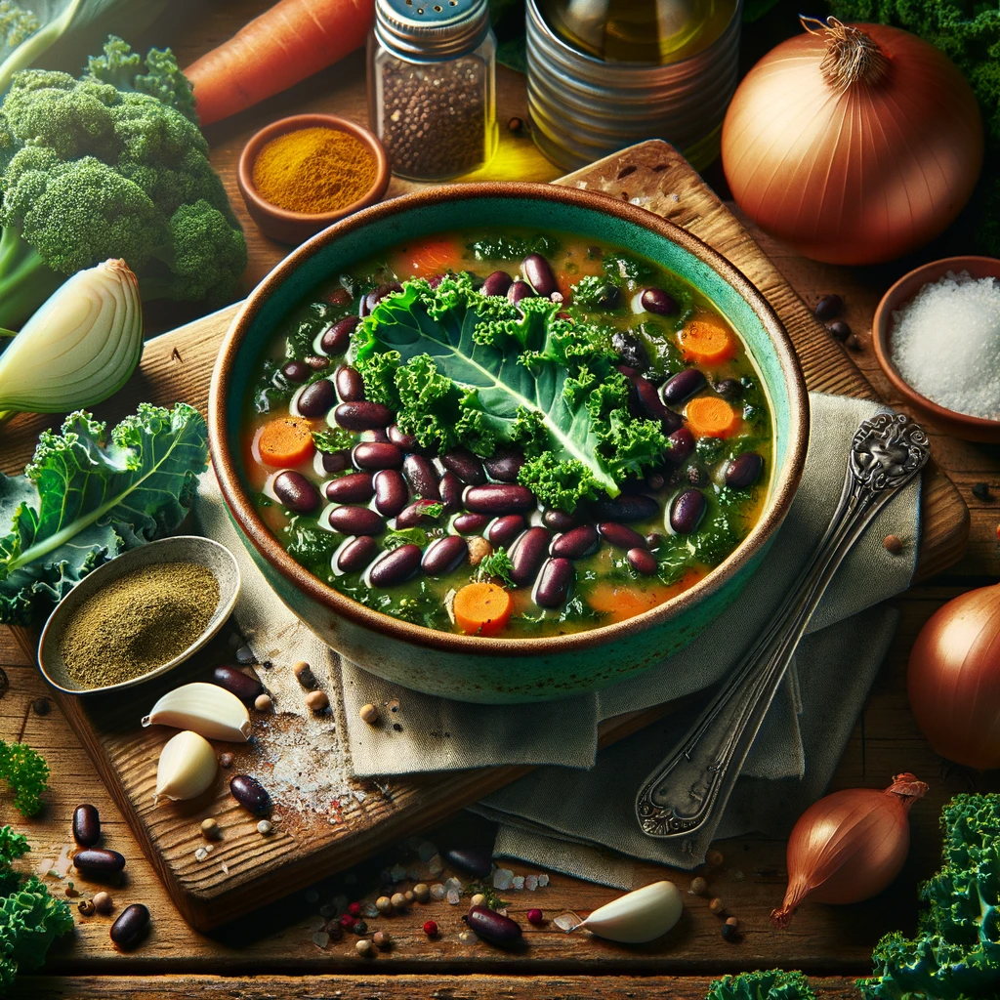

Kale and Black Bean Soup

Description
How about a comforting Kale and Black Bean Soup? It's simple, nourishing, and rich in iron and vitamins, which can help alleviate cramps. Here's a quick recipe:
Ingredients
- A bunch of fresh kale, chopped
- 1 can of black beans (or about 1.5 cups cooked black beans)
- 1 large onion, chopped
- 2 cloves of garlic, minced
- 2 medium carrots, diced
- 1 liter of vegetable broth
- Ground cumin to taste
- Salt and pepper to taste
- Olive oil
- Optional: Lemon juice or vinegar for a tangy twist
Steps
- Saute the Vegetables: In a large pot, heat a splash of olive oil over medium heat. Add the chopped onion and garlic, sauteing until they become translucent.
- Add Carrots and Spices: Add the diced carrots to the pot along with the ground cumin, salt and pepper. Stir well and cook for about 5 minutes.
- Kale Time: Add the chopped kale to the pot, stirring until it starts to wilt.
- Beans and Broth: Drain and rinse the black beans, then add them to the pot. Pour in the vegetable broth and bring the soup to a boil.
- Simmer: Reduce the heat and let the soup simmer for about 20-30 minutes, or until the vegetables are tender.
- Final Touches: Adjust the seasoning with more salt, pepper, or cumin if needed. For a tangy twist, add a splash of lemon juice or vinegar just before serving.
- Serve: Enjoy your Kale and Black Bean Soup, herhaps with a slice of whole grain bread or a few crackers on the side.
This soup is not only warm and comforting but also packed with nutrients that are beneficial during your menstrual cycle, helping to alleviate cramps and provide essential nutrients. Enjoy your meal!